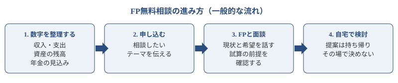

「老後資金が不安」という気持ちの正体は、多くの場合、いくら必要なのかが分からないことです。老後に必要な金額は、今の収入と支出、持っている資産、将来受け取る年金の見込みで決まります。逆に言えば、この4つの数字がそろっていない状態で相談に行くと、話は一般論の説明で終わりがちです。この記事では、FP（ファイナンシャルプランナー）への無料相談を使う前に整理しておく数字、相談当日の一般的な進み方、無料相談ならではの注意点をまとめます。なお、この記事で扱うのは相談の使い方までで、特定の金融商品や保険商品をおすすめすることはしません。末尾では、初回の対面相談が無料のFP相談サービス「ガーデン」を紹介します。
まず「4つの数字」をそろえる
相談に行く前の出発点は、自分の家計の棚卸しです。正確な数字である必要はなく、手元にある最新の明細や残高の範囲で構いません。最低限、次の4点を出しておきましょう。
| 収入 | 現在の年収と、退職時期の見通し | 給与明細や源泉徴収票で確認する。退職金が見込める場合は、その見通しもメモしておく |
| 支出 | 毎月の生活費と固定費の合計 | 家計簿がなくても、通帳やカード明細から1か月分を拾えば十分。老後に減る支出・増える支出の見当もつけておく |
| 資産 | 預貯金・投資などの残高 | 銀行口座、証券口座、確定拠出年金（iDeCo・企業型DC）などの残高を一覧にしておく。住宅ローンなど負債の残高もあわせて出す |
| 年金の見込み | 将来受け取る年金額の見込額 | 誕生月に届く「ねんきん定期便」に見込額が載っている。「ねんきんネット」でも試算できる |
この4つがそろうと、「年金と資産で老後の支出をどこまでまかなえるか」という不足分の話から相談を始められます。支出の内訳を出すときは、当サイトの「固定費の見直しチェックリスト｜家賃・通信・保険・サブスクの削減額の目安」も、固定費の拾い出しに使えます。
相談が「無料」で成り立つ仕組み
「無料相談」と聞くと、なぜタダで専門家の時間を取れるのかが気になる人もいるはずです。無料の相談窓口は一般に、相談者から相談料を取るのではなく、相談を通じて金融商品やサービスの契約が成立した場合に、提供会社側から窓口や担当者へ手数料が支払われる仕組みで運営されている、と説明されることが多い形態です。相談者にとっての費用はゼロでも、窓口側には契約成立時の収入があるため、相談の場では提案が「契約すること」を前提に進みやすい面はあります。
この仕組みを知っておくと、相談の受け方が変わります。大切なのは次の2点です。
- その場で決めない前提を先に伝える：提案は持ち帰って、家族と話してから決める進め方で問題ありません。最初にそう伝えておくと、自分のペースで検討できます
- 試算の前提を言葉で確認する：「何歳まで生きる前提か」「年金額をいくらと置いているか」で試算結果は大きく変わります。前提を説明してもらうことで、数字が自分の状況に合っているか判断しやすくなります
無料であること自体は、相談を使わない理由にはなりません。仕組みを理解したうえで、判断の主導権を自分側に置くことが、無料相談を老後資金や資産形成の検討に役立てるコツです。あわせて、1つの窓口の意見だけで決めず、必要なら複数の窓口や担当者の意見を聞き比べることも有効です。ガーデンの申し込み条件や相談の詳細は、公式サイトで最新の案内を確認してください。

相談当日の進み方（一般的な流れ）
無料相談の進み方は窓口や担当者によって細部が異なりますが、一般的には次のような流れで進みます。当日の動きを先に知っておくと、準備の抜けにも気づけます。
- 現状のヒアリング：家族構成、働き方、収入と支出、資産の残高、年金の見込み、相談したいテーマ（老後資金・資産形成など）を伝える。用意した数字がここで効いてくる
- 現状の整理：年金と資産で老後の支出をどこまでまかなえるか、不足が見込まれるのはどの部分かを整理してもらう
- 提案と比較：対策案が提示される場合は、試算の前提（寿命・年金額・運用利回りなど）とあわせて、今のままの場合との違いを確認する
- 持ち帰って検討：その場で結論を出さず、提案資料を持ち帰る。家族と話し、必要なら追加の質問や別の窓口への相談をしてから決める
対面相談の場合は、ねんきん定期便や残高の分かる書類を持参すると確認が早く済みます。どちらの形でも、「今日決めない」と伝えておけば、検討の時間を確保しやすくなります。
相談で確認しておきたいポイント
| 確認する点 | なぜ聞くのか | 聞き方の例 |
|---|---|---|
| 不足額の根拠 | 「老後にいくら不足するか」は、前提の置き方で大きく変わるため | 「不足額は、どんな前提で計算していますか」 |
| 試算の前提条件 | 寿命・年金額・運用利回りなどの前提が自分の状況に合っているか確認するため | 「年金の見込額は、私のねんきん定期便の数字で計算できますか」 |
| 提案の理由 | 提案が自分の不足分や希望に合っているか判断するため | 「なぜこの対策が必要なのか、順番に教えてください」 |
| 次のステップと費用 | 2回目以降の相談や、契約した場合に費用が発生するかを確認するため | 「次回以降の相談や契約で、費用がかかる場面はありますか」 |
| 検討の進め方 | 持ち帰って検討できるか、追加相談ができるかを確認するため | 「今日は持ち帰って、後日また相談できますか」 |
とくに試算の数字は、前提が違えば結論も変わります。「老後に○○万円不足します」という結論だけを受け取らず、前提を自分の数字に置き換えてもらうことが、相談を自分の判断材料に変えるポイントです。
よくある疑問
FPへの無料相談はなぜ無料なのですか
無料の相談窓口は一般に、相談者から相談料を取るのではなく、相談を通じて金融商品やサービスの契約が成立した場合に、提供会社側から窓口や担当者へ手数料が支払われる仕組みで運営されている、と説明されることが多い形態です。相談者にとっての費用はゼロでも、窓口側には契約成立時の収入があるため、提案が「契約すること」を前提に進みやすい面はあります。だからこそ、その場で決めずに持ち帰って検討し、必要なら複数の窓口や担当者の意見を聞き比べる進め方が大切です。ガーデンの相談条件の詳細は、公式サイトで確認してください。
相談前に何を整理すればいいですか
現在の収入（年収と退職時期の見通し）、毎月の支出と固定費、預貯金や投資などの資産残高、年金の見込額の4つをそろえておくと、現状の確認がスムーズに進みます。年金の見込額は、誕生月に届く「ねんきん定期便」や「ねんきんネット」で確認できます。正確な数字でなくても、手元にある最新の明細や残高の範囲で構いません。
相談したらその場で契約しないといけませんか
相談は契約とは別のものです。一般的には、提案を受けたあとに自宅で内容を検討し、契約するかどうかを後日決める進め方ができます。申し込みの時点で「今日は決めずに持ち帰りたい」と先に伝えておくと、当日の進み方を自分でコントロールしやすくなります。
ガーデンでは何を相談できますか
ガーデンは、老後資金や資産形成についてFP（ファイナンシャルプランナー）に相談できる窓口で、初回の対面相談が無料です。相談できる内容の範囲、申し込みの条件、2回目以降の扱いなどの詳細は、公式サイトで確認してください。
相談前チェックリスト
- 現在の収入（年収）と退職時期の見通しを書き出した
- 毎月の支出と固定費の合計を出した
- 預貯金・投資・確定拠出年金などの資産残高をそろえた
- ねんきん定期便やねんきんネットで年金の見込額を確認した
- 相談したいテーマ（老後資金・資産形成など）をメモに書き出した
- 「その場で決めずに持ち帰る」前提を伝える準備をした
まとめ
老後資金や資産形成の不安は、収入・支出・資産・年金の見込みという4つの数字をそろえることで、「何がどれだけ不足しているのか」という具体的な検討に変えられます。FPへの無料相談を使う価値は、その不足分を専門家の目で整理してもらえる点にあります。無料で成り立つ仕組みを理解し、「その場で決めない」「試算の前提を確認する」「複数の意見を聞く」を守れば、相談は自分の判断材料を増やす場になります。
【PR】初回の対面相談が無料のFP相談サービス「ガーデン」は、老後資金や資産形成についてFPに相談したい場合の候補のひとつです。申し込む場合は、上の4つの数字と相談したいテーマのメモをそろえてからどうぞ。相談できる内容の範囲や申し込み条件などの詳細は、公式サイトで確認してください。
老後資金・資産形成をFPに無料相談！厳選プロが丁寧サポート【ガーデン】